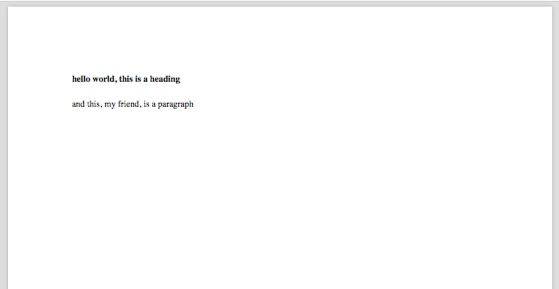
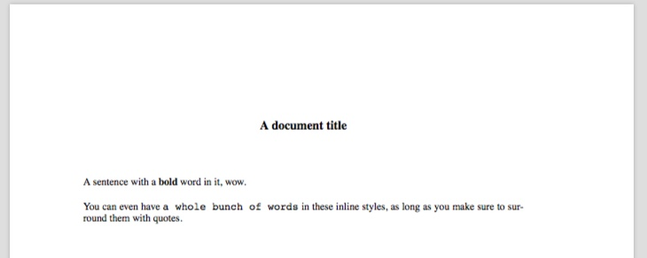
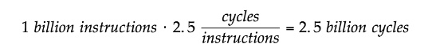
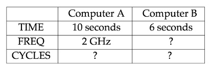

Otober 25, 2020 — Josh
Hello there kind people of the world, this is a walkthrough of my workflow with Groff (GNU troff). I made a YouTube video about this a few months ago, which you can see here, but I think this kind of content is much better delivered in written format, so here's a blog post on the same.
Very informally, typesetting is the process of taking text and arranging it on a page to print. This was once a physical process done with metallic forms of letters, but at this point we have electronic tools to automate the process for us.
How could you do this on the command line, where all you have is plain text? One answer is, using some special syntax of a domain specific language, you can specify not only the content of your document (the text), but its format, too. Groff is one of such DSLs, TeX is another. Note that this is a very different process from a WYSIWYG (what you see is what you get) editor, like Microsoft Word, where what you see in front of you is what will be printed on the page. In some cases a markup language (which symbolically denotes formatting, rather than visually) is preferrable. There are many arguments for this online which I won't go over here.
Also, fun fact, most man pages are formatted using Groff.
Groff has essentially been obsoleted by more advanced typesetting tools like TeX (and its children), but it is part of a very lightweight environment that comes preinstalled on some UNIX-like systems, so I posit that it is still worth checking out. Besides that, it's part of a rich lineage of programs stemming from Bell Labs, which is reason enough for me :).
I stumbled upon Groff because of my rather unique set of constraints --
Ok, the last two points are far from unique, but I'm sure you good people treat your computers more respectfully than I do mine. This disk space limitation basically means I'm unable to download bulky programs, such as LaTeX.
I was pleasantly surprised to learn that MacOS comes with all the utilities necessary for my needs preinstalled -- hurray, no extra disk space wasted!
So, the answer to why Groff? would be: because you don't want to download any large programs and you want the ability to create formatted documents in your preferred editor.
Oh, and before you click off the page, also note that there are preprocessors available with Groff that extend it to create tables, equations, and diagrams.
You'll need: Groff, and some tool to convert PostScript (which will be emitted by Groff) to PDF. On MacOS, this will be groff and cupsfilter (part of the CUPS suite of printing utilities), both of which you already have. On other systems, this will be groff and probably ghostscript (which you can install if you don't have it). ghostscript is an open source implementation of PostScript.
Before we write our hello world program, we'll need to pick a macro package to use. For our purposes, macros are the commands available for us to use -- each set is meant for different applications. Pick from ms, mom, man, and so on.
I'll be using the ms macro package, written by Mike Lesk, because that's what I found the most resources for online. Here's a whitepaper which I have not yet read lol.
Ok, the next step is to write our document with the proper syntax. Files using the ms macros are named in the form file.ms. Here's our hello world document -- don't worry, this won't hurt too bad.
.SH
hello world, this is a heading
.LP
and this, my friend, is a paragraph
Once you've saved that, it's time to compile it into PostScript and then convert that into a PDF.
# notice we specify the macro package with a flag, -ms in our case
# this will output the resultant PostScript to standard out:
$ groff -ms file.ms
# let's put the PostScript in a file instead, using output redirection
$ gross -ms file.ms > file.ps
# now we can convert this PostScript file to a PDF
$ cupsfilter file.ps > file.pdf
# or, if you're using ghostscript:
$ ps2pdf file.ps file.pdf
# remove the intermediary PostScript file
$ rm file.ps
This produces a very crisp and lean PDF file. Here's a picture:

Once you've got the process down, it's just a matter of learning the syntax of Groff (which can admittedly leave something to be desired at times).
.TL - title
.AU - author
.AI - author's institution
.DA - date in footer
.PP - indented paragraph
.LP - unindented paragraph
.QP - blockquote
.NH __ - numbered heading
.SH - regular heading
.B "text" - bold
.I "text" - italic
.UL "text" - underline
.CW text - monospace
.BX text - box around text
.LG .SM - large/small text (can nest)
.IP marker - list \[bu]
.1C/.2C - column mode
\" comment
\*Q, \*U - produce quotes
Some examples might help, this follows in the style of many UNIX tools such as awk and sed that encourage learning by example.
.TL
A document title
.LP
A sentence with a
.B "bold"
word in it, wow.
You can even have
.CW "a whole bunch of words"
in these inline styles, as long as you make sure to
surround them with quotes.
\" Hope this was helpful... this comment won't show up in the document!
This produces:

You can extend Groff with your own macros.
First, create a file which will contain your macros (it can be named whatever you want. Mine will be called my_macros, and it'll be in my home directory, ~.
In order to "include" these macros in your Groff source file, so that they would be useable, the syntax is: .so ~/my_macros (put this as the first line in your document).
Now let's take a look at what the contents of your macro file might be:
\" The macro file is a groff source file -- this is still a comment
\" You can execute arbitrary groff commands here, for example:
.defcolor darkgreen rgb 0.1 0.5 0.2
.fam P
\" Now every file I include these macros in will have the font color darkgreen
\" defined, and the font family will be "P" (whatever font that refers to)
\" You can also define macros though, which is really the point of this
.de HEADING
.SH
..
\" Now, every time you write HEADING, it will be replaced by .SH
\" .de means define, the token afterwards is the name of your new macro, and
\" .. ends the definition (it can have an arbitrary number of lines)
\" That's probably not a macro that I would use -- here's my actual macro file:
.de green
.gcolor darkgreen
..
.de neerg
.gcolor black
..
.de bullet
.IP \[bu]
..
\" Yes, it's quite sparse lmfao
Now I can do stuff like this:
.so ../../macros
.DA
.green
.AU
CS260, Computer Architecture II
.neerg
.TL
Lecture 3
.QP
In this lecture we discussed why the clock rate of a computer
doesn't necessarily correspond to its speed. We also looked at
ways we can compare/discuss the performances of multiple computers,
culminating in benchmarking and practice problems on performance from
the textbook.
.green
.SH
Why does a clock rate not correspond directly to the speed of a computer?
.neerg
You can see the output of that here.
As I mentioned, there are a number of preprocessors for Groff which extend its capabilities (eqn is written by our friend Brian Kernighan along with Lorinda Cherry). The only difference here is some additional syntax, and a couple of extra command line flags.
An equation using eqn:
.EQ L
{1~billion~instructions} times {2.5}~cycles over instructions = 2.5~billion~cycles
.EN

This is syntax for making a table using tbl... I may be doing this entirely wrong.
.TS
tab(;) allbox;
c;c;c.
; Computer A; Computer B
TIME; 10 seconds; 6 seconds
FREQ; 2 GHz; ?
CYCLES; ? ; ?
.TE

And this is for pic.
.LP
A circle and a box, who are best friends
.PS
circle
box
.PE
In order to use eqn, tbl, and pic, you have to tack on the -e -t and -p flags, respectively.
For example, groff -ms -e -t -p file.ms > file.ps.
Emacs users need not apply... because you have org mode so you don't need to even read this blog post lol.
We want to minimize repetitive tasks and remove overhead in writing documents. This means shell scripts and keyboard shortcuts.
Firstly, I recommend you to create a script to prefill some information into your .ms file. Here's my take at that:
#!/bin/bash
# call this file nota, for example
# usage: nota hello.ms
if [ -z "$1" ]; then
echo "no"
exit
fi
file="$1"
echo ".so ../../macros" > "$file"
echo ".DA" >> "$file"
echo ".AU" >> "$file"
echo ".TL" >> "$file"
echo "Lecture X" >> "$file"
echo "" >> "$file"
echo ".LP" >> "$file"
vim "$file"
Next, we should automate the compilation process. Here's a script that does that:
#!/bin/bash
# call this file gack, for example
# usage: gack hello.ms
# assuming all goes well, it outputs hello.pdf
if [ -z "$1" ]; then
echo "no"
exit
fi
file="$1"
name=${file%.*} #remove file extension
groff -e -t -p -ms "$file" > temp.ps
cupsfilter temp.ps > "$name.pdf"
# or, on other systems: ps2pdf temp.ps "$name.pdf"
rm temp.ps
open "$name.pdf"
# the open command opens a file in its default viewer on macOS
# on linux, change to xdg-open
# or change to the name of your preferred pdf viewer
If you email me I'll tell you where I got the name gack from.
Now, this is great, but to go one step further and almost mimic live-preview or whatever it's called, let's create an intuitive keyboard shortcut to recompile and open our document.
Place this in your .vimrc file: nnoremap ,, :w<CR>:!gack %<CR><CR>. Feel free to change ,, to whatever you prefer, that should probably be <leader><leader>. Now, whenever you click ,,, your document will be recompiled and updated in your PDF viewer. Pretty sick stuff, and a very efficient way to work.
By the way, this assumes that gack is in a directory specified in your PATH environment variable -- if it's not, just write out the full path to gack. Also don't forget to make the scripts executable with chmod +x myscript.
Well, congratulations, you're basically an expert now. Just kidding lol, but this is enough information to pragmatically use Groff. Here are some assorted resources that may help you in learning how to use it:
This whole subsection of computing regarding documents and such is very cool, you should look more into roff (Bell Labs), TeX (Knuth), Interpress (Xerox Parc), and PostScript (Adobe).
Brian Reid's thesis on his typesetting system, Scribe, is extremely interesting and comprehensive. Honestly a great piece of writing.
A discussion about the differences and history of Interpress and PostScript. If you didn't know, Interpress is the precursor PostScript, which in turn is the precursor to PDF.
Professor Brailsford from the YouTube channel Computerphile is very knowledgable about PostScript and PDF, perhaps because he was directly involved in their inception :P.
A beautiful collection of history about roff and its ancestors/descendants.